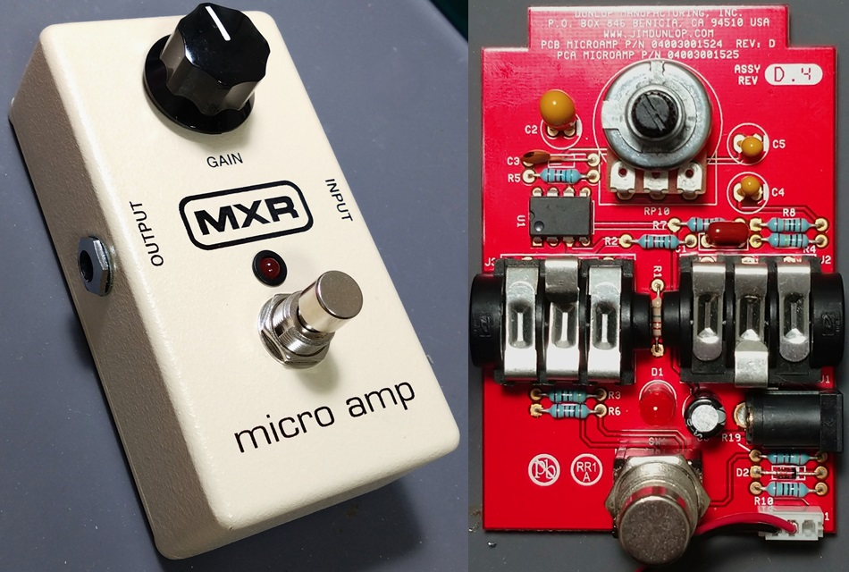
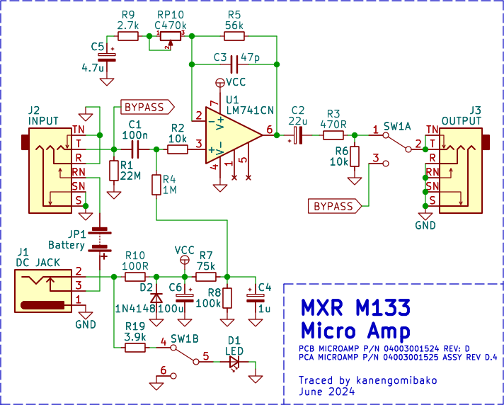
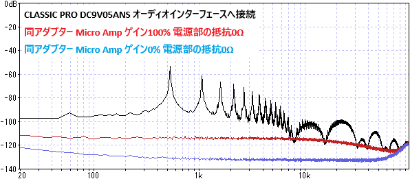
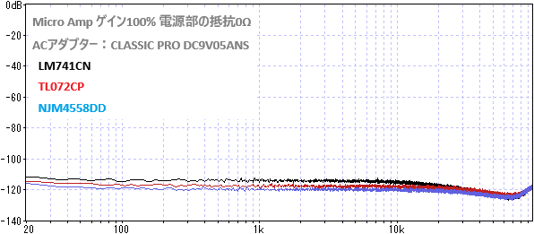

MXR M133 Micro Amp 解析
2024年07月05日 カテゴリー：修理・改造・解析

前回のEP Boosterに引き続き、今回はMXR Micro Ampを使って電源ノイズの影響はどうなるか調べました。
▽回路図

ElectroSmach.comのMXR MicroAmp Analysisに回路解説があります。ただこのページの回路図は古いもののようで、今回トレースしたものは以下の変更があります。
・R2 1k → 10k
・R4 10M → 1M
・R7 100k → 75k
・電源部1N4001 → R10 100R
・C2 15u → 22u
・RP10 500k → 470k
VCCが9Vの時バイアス電圧は5.1Vで、少し高めに設定されています。バイアス電圧が4.5Vだと、ゲインを上げた時グラウンド側からクリップが起こるため、それを防ぐ意味合いがありそうです。できるだけ歪みにくくなる（上下対称にクリップし始める）ようにR8の値を変えてみると、バイアス電圧は4.9Vあたりでした。クリーンブースターを設計する時は、バイアス電圧を調整するのもよいかと思います。
4558のようなオペアンプでは、グラウンドに近い入力だと出力が電源電圧側に跳躍する現象が起きることが知られています（参考ページ→汎用オペアンプを単電源で使用するときの注意点）。741では起こりませんが、このような特性に注意する機会はありそうです。
【電源の影響】
前回同様CLASSIC PROのACアダプターを使用しました。電源部の100Ω抵抗は0Ωに付け替え、エフェクト入力はグラウンドに接続しています。

ACアダプター由来のノイズは見受けられず、ゲイン0%では測定限界となっています。オペアンプのデータシートには電源電圧除去比（PSRR）が記載されていますが、実際にここまで除去能力があるのが確認できました。オペアンプで構成されたエフェクターでは、そこまで電源ノイズに気を遣わなくてもよいかもしれません。
ついでに別のオペアンプに変えた場合も測定しました。デュアルオペアンプをシングルに変換して取り付けています。

6dB程度の差が出ています。特にゲインが高いエフェクターでは、ローノイズなオペアンプを選ぶ意味がありそうだとわかりました。